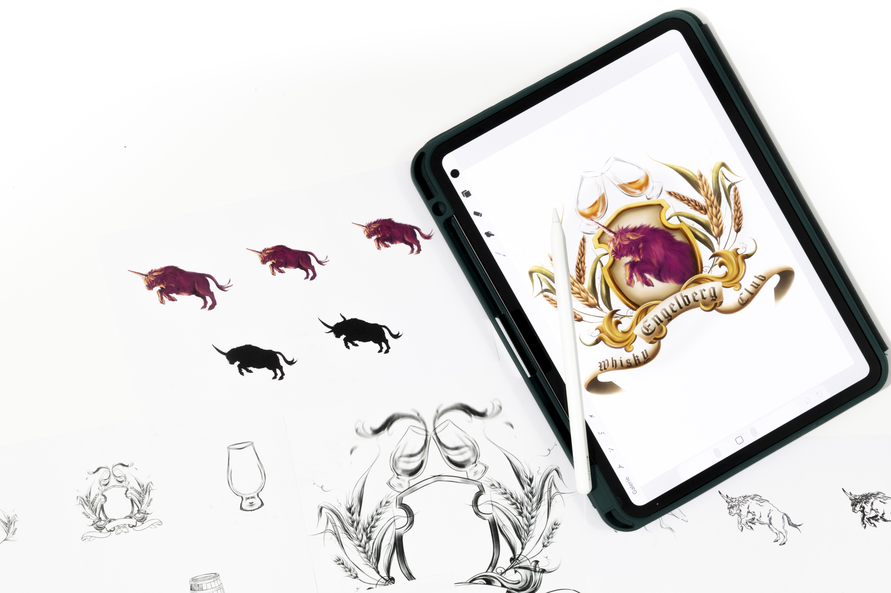

Wappen Whisky Club Engelberg
Haben Sie schon jemals ein pinkes Hochlandrind mit Einhornhorn gesehen? Was zunächst surreal und fast märchenhaft klingt, wurde in diesem Projekt zur gestalterischen Realität. Für den «Whiskey Club Engelberg» entstand ein Wappen, das eine ungewöhnliche Idee in ein visuelles Zeichen verwandelt. Aus einer spielerischen Grundidee entwickelte sich schrittweise ein charakterstarkes Emblem (Anmerkung: dieser Satz sagt nochmals in etwa das selbe wie der vorhergehende). Durch zahlreiche Skizzen und fortlaufende Verfeinerungen gewann das Hochlandrind zunehmend an Form und Ausdruck und erhielt eine markante, eigenständige Präsenz. Das Thema Whiskey bildet den inhaltlichen Kern der Gestaltung. Stilisierte Whiskeygläser und aufragende Gerstenhalme verankern das Motiv klar im Kontext und verleihen dem Wappen seine Identität. So verbindet das Ergebnis Fantasie, traditionelle Symbolik und gestalterische Präzision zu einem unverwechselbaren Emblem.
